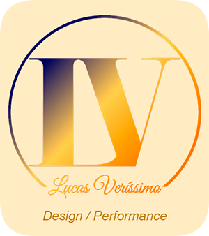

Desenvolvedor de software
Sou desenvolvedor de software com mais de cinco anos de experiência profissional. Trabalho com React, Next.js, TypeScript e JavaScript na construção e manutenção de interfaces, componentes, integrações e sistemas web. Durante três anos, contribuí em equipe para projetos do Banco Honda, Seguros Honda, Consórcio Honda e Hub Honda.
Serviços para projetos pontuais:
- Correção de bugs e problemas de responsividade
- Implementação de telas e componentes
- Pequenas integrações com APIs
- Manutenção de aplicações React e Next.js
Disponibilidade de até 20 horas por semana para uma entrega ativa por vez.